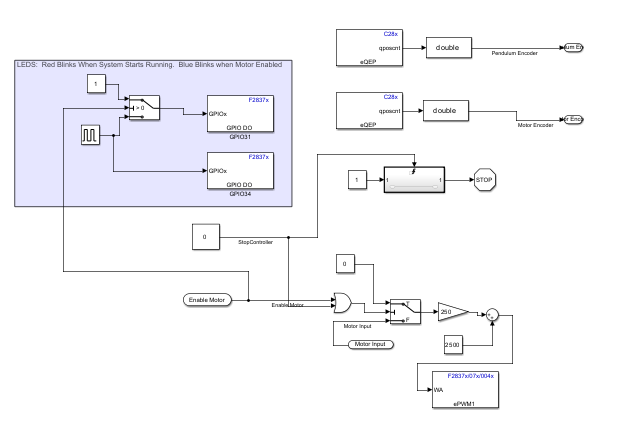
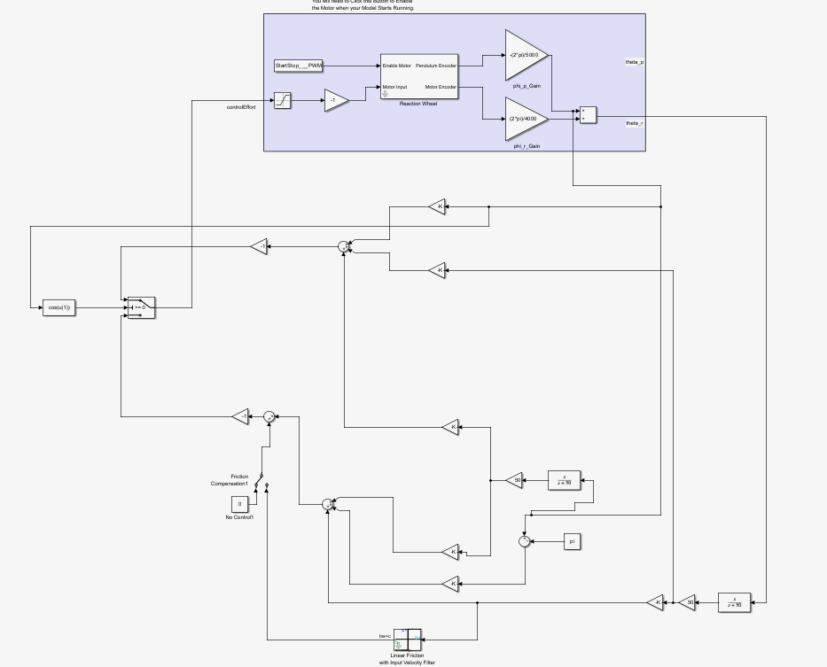
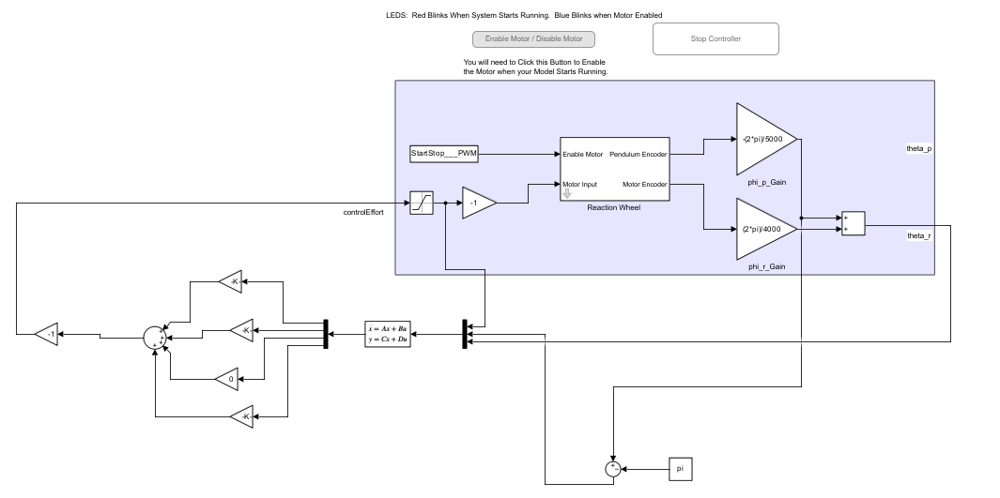
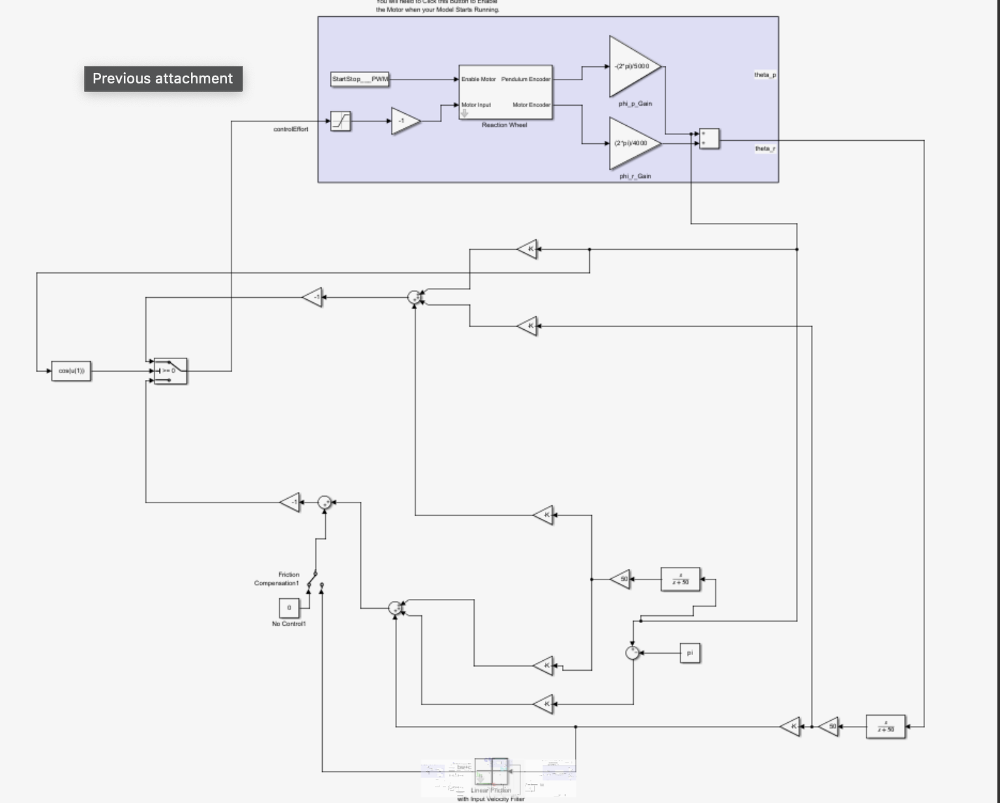

Reaction Wheel Pendulum
Modeling, State-Space Control, and Observer Design
ECE 486 — Control Systems · Spring 2026
MATLAB / Simulink · TI C2000 · Feedback Control
Stabilizing an Underactuated Pendulum
In ECE 486, my project partner and I developed and implemented a real-time controller for a reaction wheel pendulum. Rather than applying torque directly at the pendulum pivot, a DC motor accelerates a flywheel mounted at the end of the arm. The reaction torque moves the pendulum, creating a challenging underactuated system that must balance upright using only one motor.
Our work progressed from nonlinear dynamics and experimental system identification to state feedback, friction compensation, and observer-based estimation. The central challenge was not simply designing a controller that worked in simulation: it was designing one that behaved reliably with quantized encoder readings, noisy velocity estimates, motor friction, and real hardware.

1. System and Instrumentation
The reaction wheel pendulum has a stable hanging equilibrium, with the pendulum pointing downward (θp = 0), and an unstable inverted equilibrium (θp = π). Our main control objective was to balance the pendulum near the inverted position while avoiding uncontrolled wheel acceleration.
A 24V permanent-magnet DC motor spins the reaction wheel. Accelerating the wheel produces an equal and opposite torque on the pendulum, which is the only actuation available. Two optical encoders provide the measured angles: the fixed-base encoder measures pendulum angle at 5000 ticks/revolution, and the motor-shaft encoder measures rotor angle relative to the arm at 4000 ticks/revolution.
The controller was developed in MATLAB/Simulink and deployed to a TI C2000 DAQBoard through the C2000 Microcontroller Blockset. Motor commands were bounded by the interface, making input saturation another practical consideration.
2. Deriving the Dynamic Model
We started with a nonlinear model using the Lagrangian method. The generalized coordinates were pendulum angle θp and wheel angle θr. The model combines gravitational torque, the pendulum's rotational inertia, and motor torque applied to the wheel and reacted onto the arm.
The resulting dynamics were written in the normalized form used by our report:
θ̈r = bru
Here u is the normalized motor control command, a is the gravitational dynamic coefficient, and bp and br are input-to-acceleration gains. The input was scaled and limited to |u| ≤ 10 in the project model.
Linearizing about the inverted equilibrium
The upright position is inherently unstable, so we linearized the nonlinear model around θp = π. By defining the angular deviation as δθp = θp − π and applying the small-angle approximation sin(π + δθp) ≈ −δθp, we obtained a linear state-space model:
ẋ = Ax + Bu
The state matrix separates into pendulum and rotor dynamics. Experimentally identified values used in our report were a = 72.6, bp = 1.026, and br = 181.44 in the report's normalized model. The inverted open-loop model has poles at approximately +8.52, −8.52, 0, and 0. The positive pole confirms the instability of the inverted equilibrium, while the zero poles represent the wheel's unrestrained position and velocity modes.
Checking controllability showed that the four-state linearized model could be controlled through the single motor input. For balancing, however, it was not necessary to regulate the wheel's absolute angle—its speed matters, but its angular position can settle to an arbitrary constant.


3. System Identification
Deriving the equations alone was insufficient because several plant parameters depend on the physical apparatus. We estimated the relevant model coefficients from measured system behavior. The pendulum's natural oscillation frequency came from its free-swing response, and the motor-to-motion gains were incorporated into the normalized model used for feedback design.
Identifying the plant experimentally was important because a controller designed with inaccurate parameters can exhibit very different behavior when deployed. Model mismatch becomes especially relevant when using fast state observers, which rely on a mathematical prediction of the unmeasured states.
4. State-Feedback Controller Design
Initial two-state feedback
We first considered feedback using pendulum angular deviation and pendulum angular velocity. The feedback law took the form u = −Kx, with closed-loop poles selected using MATLAB pole placement. The target poles for the pendulum were −7.5 ± j13, corresponding to an underdamped response with faster restoring dynamics than the uncontrolled pendulum.
Although the two-state controller could balance the inverted pendulum in simulation, it did not directly penalize wheel speed. After a disturbance, the controller could restore the arm while allowing the flywheel to continue accelerating. That uncontrolled wheel-speed mode motivated an additional feedback state.
Three-state feedback
We expanded the controller to include wheel angular velocity while retaining pendulum angle and angular velocity. This changed the control law from two-state to three-state feedback without attempting to control absolute rotor angle.
u = −K3x
The selected closed-loop poles for the reduced three-state dynamics were −7.5 ± j13 and −7.5. Since all three are in the left half of the complex plane, the reduced linearized closed-loop system is locally asymptotically stable around the inverted equilibrium. The unregulated absolute rotor angle is not a balancing problem, since it does not influence the pendulum states.
Including wheel-speed feedback addressed the fundamental drawback of the two-state design, but it also meant that the controller was sensitive to the quality of the wheel-velocity estimate. That would become one of the main challenges on hardware.


5. Motor Friction Identification and Compensation
The motor did not respond to very small control commands as predicted by a frictionless model. This was especially problematic near the inverted balance point, where the feedback controller must issue small corrections to counter slow drift.
To estimate the friction, we operated the motor under PI speed control at several positive and negative velocity setpoints: ±25, ±50, ±75, ±100, and ±150 rad/s. Once the wheel reached steady state, the required control effort provided an estimate of the torque-equivalent friction command. We fitted separate positive- and negative-direction trends because the measured behavior was not perfectly symmetric.
| Wheel rotation | Viscous coefficient b | Offset c |
|---|---|---|
| Positive direction | 0.01178 | +0.5255 |
| Negative direction | 0.01158 | −0.565 |
These fitted values are in the report's normalized motor-command convention, not directly in N·m. The nonzero offset captures Coulomb-like friction, while the speed-dependent term captures viscous-like losses.
We added a feedforward compensation term to oppose the estimated friction. Without compensation, weak correction commands could be absorbed by the friction dead band until the pendulum error became large enough to trigger an abrupt response. Compensation reduced this effect and made small motor commands more effective, improving fine balance.
6. Why We Replaced Numerical Differentiation with State Observers
Both encoders measure angles, but the three-state controller also needs angular velocities. A straightforward approach is to differentiate the sampled encoder positions. In practice, this proved noisy: the encoders produce discrete counts, and the derivative can turn a small position change between samples into a large apparent velocity spike.
On hardware, the direct three-state controller sometimes achieved an almost-motionless inverted balance. In other runs, however, noisy velocity feedback could trigger large alternating motor commands and a self-reinforcing oscillation. The difference between simulation and physical behavior made the velocity estimator a critical part of the controller.
Full-state observer
We used a Luenberger state observer to estimate unmeasured states by evolving a copy of the plant model and correcting it with the difference between measured and predicted encoder positions:
ė = (A − LC)e
In this formulation, x̂ is the estimated state, y is the measured output, and L is the observer gain. Choosing the eigenvalues of (A − LC) in the left half-plane ensures that the estimation error converges to zero for the linear model.
Decoupling the pendulum and rotor observers
Our first full observer was sensitive to variations in the nonlinear plant parameters. Because the linearized A matrix was already block-diagonal, we separated the estimator into two independent second-order observers: one estimating pendulum position and velocity, the other estimating rotor position and velocity.
This removed unnecessary cross-coupling in the observer correction gains, reducing the chance that noise from one encoder would contaminate the other subsystem's state estimate.
| Observer | Selected observer poles | Gain vector |
|---|---|---|
| Pendulum angle and speed | −90, −95 | [185, 8622.6]T |
| Reaction wheel angle and speed | −100, −105 | [205, 10500]T |
These observer poles were selected to make the estimation dynamics faster than the feedback controller. Faster estimation helps limit lag but makes the design more sensitive to sensor noise and modeling errors. The decoupled implementation gave a better balance of responsiveness and consistency on the physical system.


7. Switching Between Downward and Inverted Stabilization
As an additional extension, we implemented two feedback controllers based on separate linearizations: one around the hanging equilibrium and one around the inverted equilibrium. The two controllers ran in parallel, with a Simulink switch selecting the appropriate feedback gain based on the pendulum angle.
cos(θp) < 0 → inverted controller
This condition separates the lower and upper half-planes. Near the hanging equilibrium, the downward controller damps residual motion. Once the pendulum is in the upper half-plane, the inverted controller attempts to catch and stabilize it upright. Each controller uses its own equilibrium-centered angle deviation, and both share the friction-compensation stage.
The down-controller gain obtained in the project was approximately Kdown = [−258.4, 0.75, 0, 0.128]. This implementation demonstrated switching between local stabilization laws; it should not be confused with a separately designed, energy-based swing-up controller that carries the pendulum from rest at the bottom all the way to the top.


8. Simulation and Hardware Validation
We compared the two-state, direct three-state, and observer-based controllers in MATLAB/Simulink and on the C2000 hardware. The nonlinear simulations were used to explore disturbance recovery, while physical tests exposed problems that were not obvious from the idealized model.
| Controller | Benefit | Limitation observed |
|---|---|---|
| Two-state feedback | Stabilized pendulum angle in simulation | No wheel-speed control after disturbances |
| Three-state feedback with friction compensation | Could achieve very tight inverted balance | Some hardware trials developed large oscillations from noisy velocity estimates |
| Decoupled observer-based feedback | Repeatable inverted stabilization and recovery from small taps | Small persistent limit cycle and somewhat slower response |
The report's simulation-disturbance table contains unfinished entries, so I have intentionally not assigned numerical disturbance-rejection limits here. Our most reliable comparison was qualitative hardware behavior: the observer-based controller did not always achieve the absolute smallest balance error, but it behaved much more consistently from trial to trial.
Key finding: The best controller in an idealized simulation was not necessarily the most reliable implementation. Direct velocity feedback could be fast when it worked, but observer-based estimates were less sensitive to encoder quantization and therefore produced more repeatable stabilization.
9. Engineering Takeaways
This project connected several areas of classical and modern control: nonlinear modeling, experimental identification, local linearization, controllability, pole-placement feedback, friction compensation, and state estimation. More importantly, it revealed which parts of a mathematically stable design can fail when transferred to hardware.
Friction created a command dead band that interfered with fine corrections. Encoder quantization made direct velocity differentiation unreliable at low speeds. Model-based observers improved consistency, but introduced estimation lag and their own sensitivity to parameter mismatch. The final design therefore represented a tradeoff between aggressive correction and repeatable physical performance.
If continuing the project, I would focus on systematic characterization of encoder noise, observer bandwidth, actuator saturation, and friction near zero speed, then quantify disturbance recovery and steady-state limit-cycle amplitude across repeated trials.
Academic team project · ECE 486 (Spring 2026). Work described here is based on the team's submitted report. The report contains the complete equations, selected gains, and Simulink diagrams.